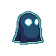
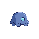
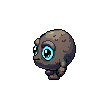
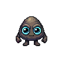
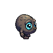

두 AI 도구를 API로 직접 호출해 둥근삼각 캐릭터를 실제 생성한 결과(전부 무료 크레딧). 코드 캔버스 도형과 차원이 다른, 진짜 게임 스프라이트 — 깊이·글로우·눈·실루엣이 다 있다. 이제 둘을 6층 기준선 + weaver 고유 축(방향/회전·애니)으로 비교해 도구 1개 + 형태 방향을 정한다.
검증 결론: 둘 다 게임 적용 가능. "세 형태 다 별로"였던 캔버스 단계와 완전히 다름. 이제 문제는 "되느냐"가 아니라 "둘 중 뭐가 weaver에 맞느냐". 아래는 같은 컨셉을 각 도구가 뽑은 실물.





| 축 | Sprite-AI | PixelLab |
|---|---|---|
| 룩 / 글로우다크 네온 정합 | ◎시안 네온 림 즉시 — 브랜드 톤 바로 | △기본 흙빛 — 프롬프트로 다크네온 튜닝+Unity 글로우 필요 |
| 방향 / 회전 ★weaver 벽주행 §2.4 | △1방향/생성 — 좌우·회전 따로 | ◎8방향 네이티브 — 시머 문제 구조 해결 |
| 애니메이션idle/run/walk | ○애니메이터 있음(개별) | ◎스켈레톤 애니 — 방향별 자동 |
| 일관성같은 캐릭터 유지 | △생성마다 다소 드리프트 | ◎8방향 한 캐릭터로 일관 |
| 속도 / 비용1인 운영 | ◎동기·즉시 · $8/mo | ○비동기(폴링) · ~$10대 · 1캐릭 2크레딧 |
| 포토샵 불요당신 제약 | ◎투명 PNG 즉시 | ◎투명 PNG·방향·시트 자동 |
weaver는 캐릭터가 벽·코너를 도는 게 게임 코어(§2.4)다. PixelLab의 네이티브 8방향 + 스켈레톤 애니가 그동안 우리를 괴롭힌 "픽셀 회전 시머"를 구조적으로 없앤다 — 진짜 방향 스프라이트라서. 일관성·애니까지 한 캐릭터로 자동이라 1인 운영에 강하다.
형태 방향도 골라주세요 — Sprite-AI 3종(돔/삼각/크리처) + PixelLab 정면. "둥근삼각"에 가장 맞는 건 SA 삼각 또는 PL 정면(둥근 egg). 어느 결로 PixelLab을 본격 튜닝할지.
결정 — ① 도구 (PixelLab 주력 / Sprite-AI / 둘 분담) · ② 형태 방향 (돔 / 삼각 / 크리처 / egg). 정해주시면 그 조합으로 PixelLab 다크네온 + 애니 1개 뽑아 게임 적용 최종 확인하겠습니다.